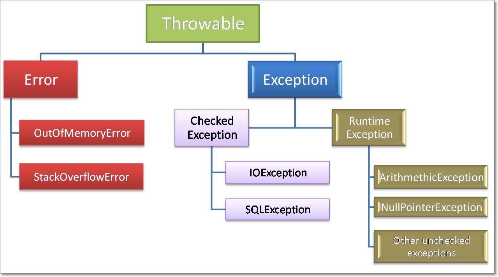
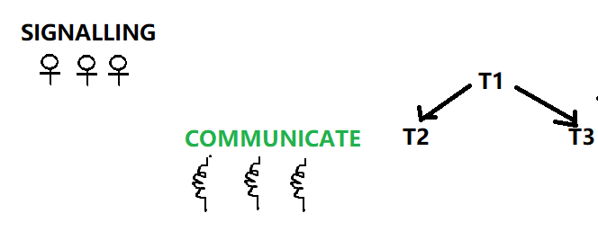
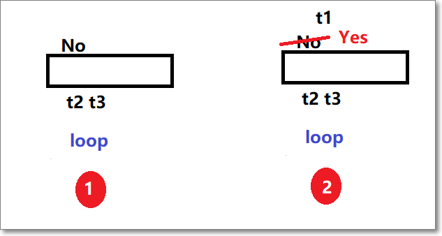
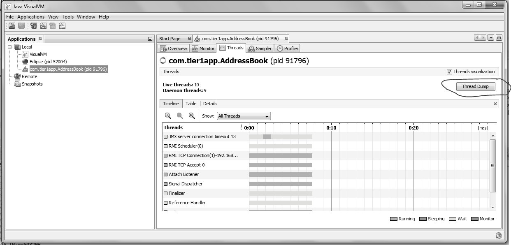
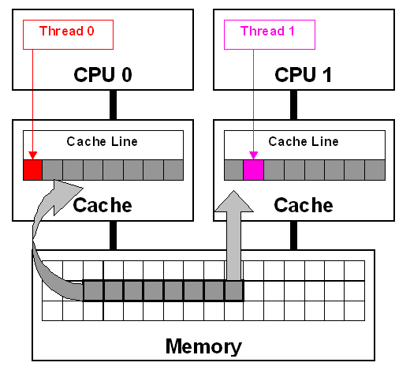
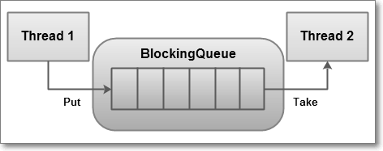

Strings
1.What is immutable object? Can you write immutable object?
Class –Final, Private Variables –Final, Public params Constructor, Only
getters
Immutable classes are Java classes whose objects cannot be modified once created.
-
Declare the class as final so it can’t be extended.
-
Make all fields private & final so that direct access is not allowed & it’s values can be assigned only once.
-
Initialize all the fields via a constructor
-
Write getters only, not setters.
// An immutable class
public final class Student {
final String name;
final int regNo;
public Student(String name, int regNo) {
this.name = name;
this.regNo = regNo;
}
public String getName() {
return name;
}
public int getRegNo() {
return regNo;
}
}
// Driver class
class Test {
public static void main(String args[]) {
Student s = new Student("ABC", 101);
System.out.println(s.name);
System.out.println(s.regNo);
// Uncommenting below line causes error
// s.regNo = 102;
Exception in thread "main" java.lang.Error: Unresolved compilation problem:
The final field Student.regNo cannot be assigned
}
}
2.What is Singleton? Can you write critical section code for singleton?
A Singleton class is one which allows us to create only one object for JVM.
Private Constructor, Private Object, Public Static Factory Method
Rules:
-
Create Singleton class Object make it as PRIVATE
-
Create PRIVATE constructor
-
Every Singleton class contains at least one factory method ```java class Student { private static Student st;
private Student() { System.out.println(“OBJECET Created FIRST TIME”); }
public static Student getObject() { if (st == null) { st = new Student(); } else { System.out.println(“OBJECET ALREDAY CREATED”); } return st; } }
public class Singleton { public static void main(String[] args) { Student s1 = Student.getObject(); Student s2 = Student.getObject(); System.out.println(s1.hashCode()); System.out.println(s2.hashCode()); } }
In above code, it will create multiple instances of Singleton class if called by
more than one thread parallel
`Double checked locking of Singleton` is a way to ensure only one instance of
Singleton class is created through application life cycle.
This will bring us to **double checked locking pattern**, where only critical
section of code is locked. Programmer call it double checked locking because
**there are two checks**
- **for \_instance == null, one without locking and**
- **other with locking (inside synchronized) block.**
Here is how double checked locking looks like in Java
```java
public static Singleton getInstanceDC() {
if (_instance == null) { // Single Checked
synchronized (Singleton.class) {
if (_instance == null) { // Double checked
_instance = new Singleton();
}
}
}
return _instance;
}
-
For Cloning – we need to Ovveride clone() method & Should throw CloneNotSupportException
-
For Reflection - we need to throw RuntimeException(unchekd) in private Constructor
Clone() will create new Object of Singleton Class?
Cloning is a concept to
create duplicate objects. Using clone we can create copy of object. Suppose,
we ceate clone of a singleton object, then it wil create a copy that is there
are two instances of a singleton class, hence the class is no more
singleton.
public static void main(String args[]) throws CloneNotSupportedException {
Student s1 = Student.getObject();
Student s2 = Student.getObject();
Student s3 = (Student) s1.clone();
System.out.println(s1);
System.out.println(s1);
System.out.println(s3);
}
Student@15db9742
Student@15db9742
Student@6d06d69c // Creates new Object, our singleton failed.
To overcome this, we should override clone() method, it should throw Exception, anyone tries to do clone
class Student implements Cloneable{
……….
@Override
protected Object clone() throws CloneNotSupportedException {
throw new CloneNotSupportedException();
}
public static void main(String args[]) throws CloneNotSupportedException {
Student s1 = Student.getObject();
Student s2 = Student.getObject();
Student s3 = (Student) s1.clone();
System.out.println(s1);
System.out.println(s1);
System.out.println(s3);
}
}
Exception in thread "main" java.lang.CloneNotSupportedException //We are GOOD now
at Student.clone(Student.java:25)
at Student.main(Student.java:33)
Reflection: You can make the new instance of the Singleton class by changing the constructor visibility as public in run-time and create new instance using that constructor .
public static void main(String args[]) throws InstantiationException, IllegalAccessException, IllegalArgumentException, InvocationTargetException {
Student s1 = Student.getObject();
Student s2 = null;
//1.Making Construtor visible
Constructor<Student>[] constructors = (Constructor<Student>[]) Student.class.getDeclaredConstructors();
for (Constructor constructor : constructors)
{
// Below code will destroy the singleton pattern
constructor.setAccessible(true);
s2 = (Student) constructor.newInstance();
}
System.out.println(s1);
System.out.println(s2);
//Using Class of newInstance()
Class c = Student.class;
Student s1 = Student.getObject();
Student s2 = (Student) c.newInstance();
System.out.println(s1); // Student@15db9742
System.out.println(s2); // Student@6d06d69c -Failed again
}
Student@15db9742
Student@6d06d69c //Failed again
To prevent Singleton failure while due to reflection you have to throw a run-time exception in constructor, if the constructor is already initialized .
class Student implements Cloneable{
private static Student st;
private Student() {
if(st!=null)
throw new RuntimeException("Go Fucker.....");
}
Exception in thread "main" java.lang.RuntimeException: Go Fucker.....
at Student.<init>(Student.java:15)
at sun.reflect.NativeConstructorAccessor
How do you reverse a String in Java without using StringBuffer?
The Java library provides String Buffer and StringBuilder class with reverse() method, which can be used to reverse String in Java.
String reverse = "";
String source= "My Name is Khan";
for(int i = source.length() -1; i>=0; i--){
reverse = reverse + source.charAt(i);
}
How to Print duplicate characters from String?
public class RepreatedChar {
public static void main(String[] args) {
String a = "success";
// 1.convert into char array
char[] c = a.toCharArray();
// 2.create Hashmap store key as character, count as value
HashMap map = new HashMap<>();
for (char ch : c) {
// 3.Check if Map contains given Char as <key> or not
if (map.containsKey(ch)) {
// if their, get the value & increment it
int i = (int) map.get(ch);
i++;
// add updated value to it
map.put(ch, i);
} else {
// if not their , add key & value as 1
map.put(ch, 1);
}
}
Set set = map.entrySet();
Iterator iterator = set.iterator() ;
while (iterator.hasNext()) {
Map.Entry entry = (Entry) iterator.next();
System.out.println(entry.getKey()+" : "+entry.getValue());
}
}
}
s : 3
c : 2
u : 1
e : 1
Reverse String in Java
-
Get String length
-
Iterate by using charAt() in reverse & append to new String ```java public class ReverseString { public static void main(String[] args) {
String s = “satyam”; String rev=””; int len = s.length();
for(int i=(len-1);i>=0;i–){
rev = rev+s.charAt(i); }
System.out.println(rev); } } ```
Is String contains Number or not
public class RegEx {
public static void main(String[] args) {
// Regular expression in Java to check if String is number or not
Pattern pattern = Pattern.compile(".*[^0-9].*");
String[] inputs = { "123", "-123", "123.12", "abcd123" };
/* Matches m = pattern.match(input);
* boolean ch = m.match(); */
for (String input : inputs) {
System.out.println("does " + input + " is number : " + !pattern.matcher(input).matches());
}
// Regular expression in java to check if String is 6 digit number or not
String[] numbers = { "123", "1234", "123.12", "abcd123", "123456" };
Pattern digitPattern = Pattern.compile("\\d{6}");
// Pattern digitPattern = Pattern.compile("\\d\\d\\d\\d\\d\\d");
for (String number : numbers) {
System.out.println("does " + number + " is 6 digit number : " + digitPattern.matcher(number).matches());
}
}
}
Java StringTokenizer With Multiple De-limiters?
The java.util.StringTokenizer class allows an application to break a string into tokens.
StringTokenizer(String str)
This constructor a string tokenizer for the specified string.
StringTokenizer(String str, String delim)
This constructor constructs string tokenizer for the specified string.
The 6 useful methods of StringTokenizer class are as follows:
| Public method | Description |
|---|---|
| boolean hasMoreTokens() | checks if there is more tokens available. |
| String nextToken() | returns the next token from the StringTokenizer object. |
| String nextToken(String delim) | returns the next token based on the delimeter. |
| boolean hasMoreElements() | same as hasMoreTokens() method. |
| Object nextElement() | same as nextToken() but its return type is Object. |
| int countTokens() | returns the total number of tokens. |
Normal Example
public class Simple{
public static void main(String args[]){
StringTokenizer st = new StringTokenizer("my name is khan"," "); //space
while (st.hasMoreTokens()) {
System.out.println(st.nextToken());
}
}
}
==============================
Output:my
name
is
khan
Java StringTokenizer with Multiple De-limiters
for this we have to specify the Delimiters , separated by //. for Example
StringTokenizer tokenizer = new StringTokenizer(s, "// //!//,//?//.//_//'//@)");
public class Singleton {
public static void main(String[] args) {
String s = "He is a very very good boy, isn't he?";
StringTokenizer tokenizer = new StringTokenizer(s, "// //!//,//?//.//_//'//@)");
System.out.println(tokenizer.countTokens());
while (tokenizer.hasMoreTokens()) {
System.out.println(tokenizer.nextToken());
}
}
}
====================
10
He
is
a
very
very
good
boy
isn
t
he
Reverse Words in a String
public class RevWords {
public static void main(String[] args) {
// using s.split("\\s");
String s = "My name is Satya";
String words[] = s.split("\\s");
String rev = "";
int len = words.length;
for (int i = (len - 1); i >= 0; i--) {
rev = rev + words[i];
}
System.out.println(rev);
// using Collections.reverse(str)
List<String> word = Arrays.asList(s.split("\\s"));
Collections.reverse(word);
System.out.println(word);
}
}
Using String Tokenizer
public class Test {
public static void main(String args[]) {
System.out.println("Using Constructor 1 -By Space ");
StringTokenizer st1 = new StringTokenizer("Hello Geeks How are you", " ");
System.out.println("Get TokensCount in case of revers: "+st1.countTokens());
while (st1.hasMoreTokens())
System.out.println(st1.nextToken());
System.out.println("Using Constructor 2 - By Given Symol");
StringTokenizer st2 = new StringTokenizer("JAVA : Code : String", " :");
while (st2.hasMoreTokens())
System.out.println(st2.nextToken());
System.out.println("Using Constructor 3 - Using Flag");
/*
* If the flag is false, delimiter characters serve to separate tokens. For
* example, if string is "hello geeks" and delimiter is " ", then tokens are
* "hello" and "geeks".
*
* If the flag is true, delimiter characters are considered to be tokens. For
* example, if string is "hello geeks" and delimiter is "
* ", then tokens are "hello", " " and "geeks".
*/
StringTokenizer st3 = new StringTokenizer("JAVA : Code : String", " :", true);
while (st3.hasMoreTokens())
System.out.println(st3.nextToken());
}
}
What does the intern() method of String class do? (answer)
The intern() method of String class put the String on which it has called into String pool e.g.** str.intern() **will put the String str into the pool. Once the String is the pool it can be reused and improve performance.
public class Demo {
public static void main(String[] args) {
String s = new String("Satya");
String intern = s.intern();
System.out.println(intern);
}
}
Output
---------
Satya
How to convert String to Date in Java? (answer)
Prior to Java 8, you can use DateFormat or SimpleDateFormat class to convert a String to Date In Java or vice-versa.
From Java 8 onwards, when you use the new Date and Time API, you can also use the DateTimeFormatter class to convert String to LocalDate, LocalTime, or LocalDateTime class in Java.
String string = "February 6, 2014";
date = new SimpleDateFormat("MM/dd/yyyy").parse(string);
Formatted output in Java
Sometimes we need to print the output in a given specified format. For doing that we have printf() method.
printf() can take multiple arguments, but System.out.print() and System.out.println() take a single argument.
public class Demo {
public static void main(String[] args) {
int x = 100;
System.out.printf("Printing simple integer: x = %d\n", x);
// this will print it upto 2 decimal places
System.out.printf("Formatted with precison: PI = %.2f\n", Math.PI);
float n = 5.2f;
// automatically appends zero to the rightmost part of decimal
System.out.printf("Formatted to specific width: n = %.4f\n", n);
n = 2324435.3f;
// here number is formatted from right margin and occupies a width of 20 characters
System.out.printf("Formatted to right margin: n = %20.4f\n", n);
}
}
Printing simple integer: x = 100
Formatted with precison: PI = 3.14
Formatted to specific width: n = 5.2000
Formatted to right margin: n = 2324435.2500
We have The java.lang.String.format(String format, Object... args) method
returns a formatted string using the specified format string and arguments.
public class Demo {
public static void main(String[] args) {
double pi = Math.PI;
// returns a formatted string using the specified format string, and arguments
System.out.format("%f\n", pi);
float f = 246.83278387f;
String s = String.format("%.2f\n",f);
System.out.println(s);
}
}
3.141593
246.83
Difference between format() and printf() method in Java? (answer)
Even though both methods can be used to format String and they have same rules the key difference is that
-
format() method returns a formatted String
-
printf() method print formatted String to console.
So, if you need a formatted String, use format method and if you want to print, then use the printf() method.
How do you append leading zero to a numeric String? (answer)
You can use the format() method of String to append leading zeros to a numeric String in Java.
String str = String.format("%04d", 9); // 0009
System.out.printf("original number %d, numeric string with padding : %s", 9, str);
original number 9, numeric string with padding : 0009
we can also use DecimalFormat class with passing format
DecimalFormat df = new DecimalFormat("0000");
String a = df.format(9); // 0009
String b = df.format(99); // 0099
String c = df.format(999); // 0999
System.out.println("\n"+a+" \n"+b+" \n"+c+" \n");
0009
0099
0999
Enum
Enumeration in Java is supported by keyword enum. enums are a special type of class that always extends java.lang.Enum.enums are Compile time Constants, because they are -public static final
Logically, each enum is an instance of enum type itself. So given enum can be seen as below declaration. JVM internally adds ordinal and value methods to this class which we can call while working with enum.
public enum Direction
{
EAST, WEST, NORTH, SOUTH;
}
final class Direction extends Enum<Direction>
{
public final static Direction EAST = new Direction();
public final static Direction WEST = new Direction();
public final static Direction NORTH = new Direction();
public final static Direction SOUTH = new Direction();
}
The ordinal() method returns the order of an enum instance. It represents
the sequence in the enum declaration, where the initial constant is assigned an
ordinal of '0'. It is very much like array indexes.
Direction.EAST.ordinal(); //0
Direction.NORTH.ordinal(); //2
The enum values() method returns all the enum values in an enum array.
Direction[] directions = Direction.values();
By default, enums don’t require constructor definitions and their default values are always the string used in the declaration. you can give define your own values by constructors to initialize.
public enum Direction
{
// enum fields
EAST(0), WEST(180), NORTH(90), SOUTH(270);
// internal state
private int angle;
// constructor
private Direction(final int angle) {
this.angle = angle;
}
public int getAngle() {
return angle;
}
Public Static void Main(){
Direction north = Direction.NORTH;
System.out.println( north ); //NORTH
System.out.println( north.getAngle() ); //90
System.out.println( Direction.NORTH.getAngle() ); //90
}
}
Remember that enum is basically a special class type, and it can have methods and fields just like any other class. You can add methods which are abstract as well as concrete methods as well. Both methods are allowed in enum.
Two classes have been added to java.util package in support of enums – EnumSet and EnumMap
public class Test
{
public static void main(String[] args)
{
Set enumSet = EnumSet.of( Direction.EAST,
Direction.WEST,
Direction.NORTH,
Direction.SOUTH
);
Map enumMap = new EnumMap(Direction.class);
//Populate the Map
enumMap.put(Direction.EAST, Direction.EAST.getAngle());
enumMap.put(Direction.WEST, Direction.WEST.getAngle());
enumMap.put(Direction.NORTH, Direction.NORTH.getAngle());
enumMap.put(Direction.SOUTH, Direction.SOUTH.getAngle());
}
}
1) Can Enum implement interface in Java?
Yes, Enum can implement interface in Java. Since enum is a type, similar to class and interface, it can implement interface. This gives a lot of flexibility to use Enum as specialized implementation in some cases
Can Enum extends class in Java?
No, Enum can not extend class in Java. Because all Enum by default extend abstract base class java.lang.Enum, obviously they cannot extend another class, because Java doesn’t support multiple inheritance for classes. Because of extending java.lang.Enum class, all enum gets methods like ordinal(), values() or valueOf().
Can we create instance of Enum outside of Enum itself? If Not, Why?
No, you cannot create enum instances outside of Enum boundary, because Enum doesn’t have any **public constructor, and compiler doesn’t allow you to provide any public constructor in Enum. But we can write private/protected Constructor.**
Since compiler generates lot of code in response to enum type declaration, it doesn’t allow public constructors inside Enum, which enforces declaring enum instances inside Enum itself.
Can we declare Constructor inside Enum in Java?
Yes, you can, but remember you can only declare either private or package-private constructor inside enum. public and protected constructors are not permitted inside enum. See here for a code example.
Exception Handling

1.Checked Exceptions: They Checked by Compiler, the given resource is existed or not, They are usually occur interacting with outside resources/ network resources e.g. database problems, network connection errors, missing files etc. Java forces you to handle these error scenarios in some manner in your application code
2.Unchecked Exceptions: occurrences of which are not checked by the compiler like coding, initialization, Primitive data errors. They usually result of bad code in your system.
3.Error : JVM +Memory+ OS level issues . OutofMemory, StatckOverFlow
What will happen if you put System.exit(0) on try or catch block?
In normal Finally block will always execute. The only case finally block is not executed is System.exit(0). In advanced case it will execute in following case.
By Calling System.exit(0) in try or catch block, its stops execution & throws SecurityException few times only.
- If System.exit(0) NOT throws security exception, then finally block Won’t be executed ```java public class Demo { public static void main(String[] args) {
try { System.out.println(“try”); System.exit(0); }catch (Exception e) { System.out.println(“catch”); } finally { System.out.println(“finally”); } } } try - (Security Exception not thrown)
- But, if **System.exit(0) throws security exception then finally block will
be executed**.
**java.lang.System.exit()** will terminates the currently executing program by
JVM.
- **exit(0)** : Generally used to indicate successful termination.
- **exit(1) or exit(-1) or any other non-zero value** –indicates unsuccessful
termination.
## What happens if we put return statement on try/catch? Will finally block execute?
Yes, finally block will execute even if you put a return statement in the try
block or catch block.
```java
try {
//try block
...
return success;
}
catch (Exception ex) {
//catch block
.....
return failure;
}
finally {
System.out.println("Inside finally");
}
The answer is yes. finally block will execute. The only case where it will not execute is when it encounters System.exit().
What happens when a finally block has a return statement?
Finally block overrides the value returned by try and catch blocks.
public static int myTestingFuncn(){
try{
....
return 5;
}
finally {
....
return 19;
}
}
This program would return value 19 since the value returned by try has been overridden by finally.
Remember, if a method return any thing in try, we must place return in catch as well.
public class Test {
public int number() {
try {
int c = 10 / 0;
return 100;
} catch (Exception e) {
return 200;
} finally {
return 300;
}
}
public static void main(String args[]) {
System.out.println(new Test().number());
}
}
0/p: 300
Why do you think Checked Exception exists in Java, since we can also convey error using RuntimeException?
Most of checked exceptions are in java.io package, which make sense because if you request any system resource and its not available, than a robust program must be able to handle that situation gracefully.
By declaring IOException as checked Exception, Java ensures that yours provide that gracefully exception handling. Another possible reason could be to ensuring that system resources like file descriptors, which are limited in numbers, should be released as soon as you are done with that using catch or finally block
Have you faced OutOfMemoryError in Java? How did you solved that?
OutOfMemoryError in Java is a subclass of java.lang.VirtualMachineError and JVM throws java.lang.OutOfMemoryError when it ran out of memory in the heap.
An easy way to solve OutOfMemoryError in java is to increase the maximum heap size by using JVM options “-Xmx512M”, this will immediately solve your OutOfMemoryError.
java –Xmx512m myprogram
-Xms512m -Xmx1152m -XX:MaxPermSize=256m -XX:MaxNewSize=256m
I/O Streams
1.ByteStreams(1 byte at a time) : read image, audio, video etc
FileOutputStream outputStream = new FileOutputStream("c:\a.txt");
for (int i = 0; i < 10; i++) {
outputStream.write(i);
}
FileInputStream inputStream = new FileInputStream("c:\a.txt");
int i;
while ((i = inputStream.read()) != -1) {
System.out.println("I : " + i);
}
2.CharacterStreams(2 Bytes at a time) : Character file data
char[] ch ={ 'a', 'b', 'c', 'd', 'e' };
FileWriter w = new FileWriter(filepath);
w.write(ch);
w.close();
FileReader r = new FileReader(filepath);
int i;
while ((i = r.read()) != -1) {
System.out.println(i + ":" + (char) i);
}
3.Buffered Streams(1024 bytes at a time): Rather than read one byte at a time, it reads a larger block at a time into an internal buffer
// 1.Create Stream Object
FileOutputStream fos = new FileOutputStream(filepath);
// 2.pass Stream object to BufferStream constructor
BufferedOutputStream bos = new BufferedOutputStream(fos);
String s = "SmlCodes.com -Programmimg Simplified";
byte[] b = s.getBytes();
bos.write(b);
bos.flush();
// 1.Create Stream Object
FileInputStream fis = new FileInputStream(filepath);
// 2.pass Stream object to BufferStream constructor
BufferedInputStream bis = new BufferedInputStream(fis);
int i;
while((i=bis.read())!=-1){
System.out.println((char)i);
}
4.Data streams: above we have only Char & Byte types. I/O of primitive data type values (int, long, float, and double)
DataOutputStream dos = new DataOutputStream(new FileOutputStream("sml.bin"));
dos.writeInt(10);
dos.writeUTF("Satya");
DataInputStream dis = new DataInputStream(new FileInputStream("sml.bin"));
System.out.println("Int : " + dis.readInt());
System.out.println("String : " + dis.readUTF());
5.Object Streams : object streams support I/O of objects. Serialization.
• Choose the appropriate class name whose object is participating in serialization.
• This class must implement java.io.Serializable interface
class Student implements Serializable {
// Exception in thread "main" java.io.NotSerializableException: io.Student
private int sno;
private String name;
private String addr;
}
public class Serialization {
public static void main(String[] args) throws Exception {
Student student = new Student();
student.setSno(101);
student.setName("Satya Kaveti");
student.setAddr("VIJAYAWADA");
FileOutputStream fos = new FileOutputStream("student.txt");
ObjectOutputStream oos = new ObjectOutputStream(fos);
oos.writeObject(student);
FileInputStream fis = new FileInputStream("student.txt");
ObjectInputStream ois = new ObjectInputStream(fis);
Student st = (Student)ois.readObject();
System.out.println(st.getSno());
System.out.println(st.getName());
System.out.println(st.getAddr());
}
}
Can a Serializable class contain a non-serializable field in Java? (answer)
Yes, but you need to make it either static or transient.
A static variable cannot be serialized. Static variables belong to a class and not to any individual instance. The concept of serialization is concerned with the object’s current state. Only data associated with a specific instance of a class is serialized, therefore static member fields are ignored during serialization
class Student implements Serializable {
// Exception in thread "main" java.io.NotSerializableException: io.Student
private int sno;
private static String name;
//Setters & Getters
}
public class Demo {
public static void main(String[] args) throws Exception {
Student student = new Student();
student.setSno(101);
student.setName("Satya Kaveti");
FileOutputStream fos = new FileOutputStream("student.txt");
ObjectOutputStream oos = new ObjectOutputStream(fos);
oos.writeObject(student);
FileInputStream fis = new FileInputStream("student.txt");
ObjectInputStream ois = new ObjectInputStream(fis);
Student st = (Student)ois.readObject();
System.out.println(st.getSno());
System.out.println(st.getName());
}
}
101
Satya Kaveti (Static serliaze ?)
//Confused? Let’s stop the program, and remove writing part & re-run it!
public class Demo {
public static void main(String[] args) throws Exception {
FileInputStream fis = new FileInputStream("student.txt");
ObjectInputStream ois = new ObjectInputStream(fis);
Student st = (Student)ois.readObject();
System.out.println(st.getSno());
System.out.println(st.getName());
}
}
101
null
This clearly indicates that static variable is not stored in the file, but the value of the static variable that is currently loaded into memory is being picked up, when you use st.getName());
Threads
What happens if we starts same Thread(ob) Twice?
public class ThreadDemo extends Thread {
@Override
public void run() {
System.out.println("Iam Running");
}
public static void main(String[] args) {
ThreadDemo ob = new ThreadDemo();
ob.start();
ob.start();
}
}
Exception in thread "main" java.lang.IllegalThreadStateException
at java.lang.Thread.start(Thread.java:705)
at threads.ThreadDemo.main(ThreadDemo.java:11)
Iam Running
What guarantee volatile variable provides?
volatile provides the guarantee, changes made in one thread is visible to others.
What is busy spin?
We have T1, T2, T3 tasks which are executed by the threads t1,t2,t3. But T2, T3 Should execute after T1 completes its execution. for that they must communicate via signaling.

We can achieve this singling process in following ways
1.Busy Wait

1. here we have FLAG variable which in initialized to NO. t2, t3 threads will check for FLAG = Yes or not for every 30 seconds via loop, util FLAG = yes.
This is called Busy Spin / Busy wait.
2.After some time, t1 changes status to YES, so that t2, t3 can proceed its execution.
Busy spinning or busy wait in a multi-threaded environment is a technique where other threads loop continuously waiting for a thread to complete its task and signal them to start.
while(spinningFlag){
System.out.println("Waiting busy spinning");
}
import org.omg.Messaging.SyncScopeHelper;
public class BusySpin {
private static boolean flag =false;
public synchronized boolean checkFlag() {
return flag;
}
public synchronized boolean changeFlag() {
flag=true;
return flag;
}
public static void main(String[] args) throws Exception {
BusySpin ob = new BusySpin();
Thread t1 = new Thread() {
@Override
public void run() {
System.out.println("T1 Running");
try {
Thread.sleep(5000);
System.out.println("============ SET FLAG TRUE===");
ob.changeFlag();
} catch (InterruptedException e) {
// TODO Auto-generated catch block
e.printStackTrace();
}
}
};
t1.start();
Thread t2 = new Thread() {
@Override
public void run() {
System.out.println("T2 Checking ........");
while (ob.checkFlag()) {
System.out.println("T2 Running.....");
}
try {
wait(300);
} catch (InterruptedException e) {
// TODO Auto-generated catch block
e.printStackTrace();
}
}
};
t2.start();
Thread t3 = new Thread() {
@Override
public void run() {
System.out.println("T3 Checking ........");
while (ob.checkFlag()) {
System.out.println("T3 Running.....");
}
try {
wait(300);
} catch (InterruptedException e) {
// TODO Auto-generated catch block
e.printStackTrace();
}
}
};
t3.start();
}
}
What is race condition in Java? Given one example? (answer)
-Race condition occurs when two or more threads try to read & write a shared variable at the same time”
Because the thread scheduling algorithm can swap between threads at any time, you don’t know the order in which the threads will attempt to access the shared data. Therefore, the result of the change in data is dependent on the thread scheduling algorithm, i.e. both threads are “racing” to access/change the data.
class Counter implements Runnable {
private int count;
@Override
public void run() {
for (int i = 1; i <= 100; i++) {
try {
Thread.sleep(100);
} catch (InterruptedException e) {
// TODO Auto-generated catch block
e.printStackTrace();
}
count++;
}
}
public int getCount() {
return this.count;
}
}
public class RaceCondition{
public static void main(String[] args) throws InterruptedException {
Counter c = new Counter();
Thread t1 = new Thread(c);
t1.start();
Thread t2 = new Thread(c);
t2.start();
// wait for threads to finish processing
t1.join();
t2.join();
System.out.println("Excepting =200, Actual is =" + c.getCount());
}
}
Excepting =200, Actual is =141 -1st Run
Excepting =200, Actual is =157 -2nd Run
What is Thread Dump? How do you take thread dump in Java?
Process has multiple Threads. Thread dump is a summary of the state of all threads of the process
-
‘jstack’ is an effective command line tool to capture thread dumps
-
Java VisualVM is a GUI tool that provides detailed information about the applications

Why Swing is not thread-safe in Java?
Since GUI screens are mostly updated in response of user action e.g. when user click a button, and since events are handled in the same Event dispatcher thread, it’s easy to update GUI on that thread.
What is a ThreadLocal variable in Java?
Thread-local variables are variables restricted to a thread, it’s like thread’s own copy which is not shared between multiple threads. Java provides a ThreadLocal class to support thread-local variables, It extends Object class.
-
Basically it is an another way to achieve thread safety apart from writing immutable classes.
-
Since Object is no more shared there is no requirement of Synchronization which can improve scalability and performance of application.
-
ThreadLocal provides thread restriction which is extension of local variable. ThreadLocal are visible only in single thread. No two thread can see each other’s thread local variable.
-
These variable are generally private static field in classes and maintain its state inside thread.
-
void set(Object value), Object get(), void remove() methods are available
public class ThreadLocalExample {
public static class MyRunnable implements Runnable {
private ThreadLocal<Integer> threadLocal = new ThreadLocal<Integer>();
public void run() {
threadLocal.set((int) (Math.random() * 100D));
System.out.println(threadLocal.get());
}
}
public static void main(String[] args) throws InterruptedException {
MyRunnable sharedRunnableInstance = new MyRunnable();
Thread thread1 = new Thread(sharedRunnableInstance);
Thread thread2 = new Thread(sharedRunnableInstance);
thread1.start();
thread2.start();
thread1.join(); // wait for thread 1 to terminate
thread2.join(); // wait for thread 2 to terminate
}
}
-----------
36
16
This example
This example creates a single MyRunnable instance which is passed to two different threads. Both threads execute the run() method, and thus sets different values on the ThreadLocal instance. If the access to the set() call had been synchronized, and it had not been a ThreadLocal object, the second thread would have overridden the value set by the first thread
Write code for thread-safe Singleton in Java?
When we say thread-safe, which means Singleton should remain singleton even if initialization occurs in the case of multiple threads.
public class DoubleCheckedLockingSingleton {
private volatile DoubleCheckedLockingSingleton INSTANCE;
private DoubleCheckedLockingSingleton() {
}
public DoubleCheckedLockingSingleton getInstance(){
if(INSTANCE == null){
synchronized(DoubleCheckedLockingSingleton.class){
//double checking Singleton instance
if(INSTANCE == null){
INSTANCE = new DoubleCheckedLockingSingleton();
}
}
}
return INSTANCE;
}
}
When to use Runnable vs Thread in Java? (Think Inheritance)
it’s better to implement Runnable then extends Thread if you also want to extend another class
Difference between Runnable and Callable in Java?
Callable was added on JDK 1.5. Main difference between these two is that Callable’s call() method can return value and throw Exception, which was not possible with Runnable’s run() method. Callable return Future object, which can hold the result of computation.
class SumTask implements Callable<Integer> {
private int num = 0;
public SumTask(int num){
this.num = num;
}
@Override
public Integer call() throws Exception {
int result = 0;
for(int i=1;i<=num;i++){
result+=i;
}
return result;
}
}
public class CallableDemo {
public static void main(String[] args) throws Exception {
ExecutorService service = Executors.newSingleThreadExecutor();
SumTask sumTask = new SumTask(20);
Future<Integer> future = service.submit(sumTask);
Integer result = future.get();
System.out.println(result);
}
}
How to stop a thread in Java?
There was some control methods in JDK 1.0 e.g. stop(), suspend() and resume() which are deprecated.
We can do it in Two ways
1.Using interrupt()
public class Demo {
public static void main(String[] args) throws Exception {
Runnable runnable = ()->{
System.out.println("Running...");
try {
Thread.sleep(5000);
} catch (InterruptedException e) {
// TODO Auto-generated catch block
e.printStackTrace();
}
System.out.println("I have Completed ...");
};
Thread t1 = new Thread(runnable);
t1.start();
t1.interrupt();
}
}
Running...
I have Completed ...
java.lang.InterruptedException: sleep interrupted
at java.lang.Thread.sleep(Native Method)
at Demo.lambda$0(Demo.java:16)
at java.lang.Thread.run(Thread.java:748)
In this case we can only stop Sleeping thread.
2.volatile boolean variable
In this case we need to use volatile boolean variable, & we need to change value to TRUE if we want to stop a thread.
I have a server; I need it to Stop
class Server implements Runnable {
private volatile boolean stop = false;
public void run() {
while (!stop) {
System.out.println("Server is running.....");
}
System.out.println("Server is stopped....");
}
public void stop() {
stop = true;
}
}
public class Demo {
public static void main(String[] args) throws Exception {
Server myServer = new Server();
Thread t1 = new Thread(myServer, "T1");
t1.start();
// Now, let's stop our Server thread
System.out.println(Thread.currentThread().getName() + " is stopping Server thread");
TimeUnit.MILLISECONDS.sleep(8);
myServer.stop();
// Let's wait to see server thread stopped
System.out.println(Thread.currentThread().getName() + " is finished now");
}
}
Actually we are not stoping the Thread, we just coming out of the run().
Why wait, notify and notifyAll are not inside thread class?
Java provides lock at object level not at thread level. Every object has lock, which is acquired by thread. Now if thread needs to wait for certain lock it make sense to call wait() on that object rather than on that thread.
Had wait() method declared on Thread class, it was not clear that for which lock thread was waiting. In short, since wait, notify and notifyAll operate at lock level, it make sense to defined it on object class because lock belongs to object.
What is the difference between Deadlock, Starvation, and Livelock?
Deadlock: is a situation where two more threads are blocked because of waiting for each other forever.one of the possible situation is nested Synchronized blocks.
To create simple deadlock situation for a servlet, just place doPost() method inside doGet() and doGet()method inside doPost().
public class Business {
private Object lock1 = new Object();
private Object lock2 = new Object();
public void foo() {
synchronized (lock1) {
synchronized (lock2) {
System.out.println("foo");
}
}
}
public void bar() {
synchronized (lock2) {
synchronized (lock1) {
System.out.println("bar");
}
}
}
public static void main(String[] args) {
Business business = new Business();
Thread t1 = new Thread(new Runnable() {
public void run() {
business.foo();
}
});
t1.start();
Thread t2 = new Thread(new Runnable() {
public void run() {
business.bar();
}
});
t2.start();
}
}
how to avoid deadlock
-
Avoid acquiring more than one lock at a time.
-
If not, make sure that you acquire multiple locks in consistent order.
In the above example, you can avoid deadlock by synchronize two locks in the same order in both methods.
public void foo() {
synchronized (lock1) {
synchronized (lock2) {
System.out.println("foo");
}
}
}
public void bar() {
synchronized (lock1) {
synchronized (lock2) {
System.out.println("bar");
}
}
}
2.LiveLock :A real-world example of livelock occurs when two people meet in a narrow corridor (తాడిమట్ట), and each tries to be polite by moving aside to let the other pass, but they end up swaying from side to side without making any progress because they both repeatedly move the same way at the same time.
Livelock occurs when two or more processes continually repeat the same interaction in response to changes in the other processes without doing any useful work. These processes are not in the waiting state, and they are running concurrently. This is different from a deadlock because in a deadlock all processes are in the waiting state.
public class Test {
boolean selected=false;
public boolean isSelected() {
return selected;
}
public void setSelected(boolean selected) {
this.selected = selected;
}
public static void main(String args[]) {
Test itemOne = new Test();
Test itemTwo = new Test();
Thread tOne = new Thread(new Runnable() {
@Override
public void run() {
while(!itemOne.isSelected()) {
try {
Thread.sleep(10);
} catch (InterruptedException e) {
e.printStackTrace();
}
}
itemTwo.setSelected(true);
}
});
Thread tTwo = new Thread(new Runnable() {
@Override
public void run() {
while(!itemTwo.isSelected()) {
try {
Thread.sleep(10);
} catch (InterruptedException e) {
e.printStackTrace();
}
}
itemOne.setSelected(true);
}
});
tOne.start();
tTwo.start();
}
}
3. Starvation: describes a situation where a thread holds a resource for a long time so other threads are blocked forever. The blocked threads are waiting to acquire the resource but they never get a chance. Thus they starve to death.BTW, Starvation means suffering or death caused by lack of food.
Starvation can occur due to the following reasons:
- Threads are blocked infinitely because a thread takes long time to execute some synchronized code (e.g. heavy I/O operations or infinite loop).
- A thread doesn’t get CPU’s time for execution because it has low priority as compared to other threads which have higher priority.
- Threads are waiting on a resource forever but they remain waiting forever because other threads are constantly notified instead of the hungry ones.
When a starvation situation occurs, the program is still running but doesn’t run to completion because some threads are not executed.
public class Worker {
public synchronized void work() {
String name = Thread.currentThread().getName();
String fileName = name + ".txt";
try (
BufferedWriter writer = new BufferedWriter(new FileWriter(fileName));
) {
writer.write("Thread " + name + " wrote this mesasge");
} catch (IOException ex) {
ex.printStackTrace();
}
while (true) {
System.out.println(name + " is working");
}
}
public static void main(String[] args) {
Worker worker = new Worker();
for (int i = 0; i < 10; i++) {
new Thread(new Runnable() {
public void run() {
worker.work();
}
}).start();
}
}
}
//we created 10 threads but, 1st threads run continuously in infinite loop, remaining will die because they won’t get any chance to execute.
Finally,
- Deadlock: All threads are blocked, the program hangs forever.
- Livelock: No threads blocked but they run into infinite loops. The program is still running but unable to make further progress.
- Starvation: Only one thread is running, and other threads are waiting forever
How do you check if a Thread holds a lock or not?
There is a method called holdsLock() on java.lang.Thread, it returns true if and only if the current thread holds the monitor lock on the specified object.
Thread t = Thread.currentThread();
System.out.println(Thread.holdsLock(t));//true or flase -checked
What is Semaphore in Java?
Semaphore in Java is a new kind of synchronizer. It’s a counting semaphore. Conceptually, a semaphore maintains a set of permits. Each acquire() blocks if necessary until a permit is available, and then takes it. Each release() adds a permit, potentially releasing a blocking acquirer. However, no actual permit objects are used; the Semaphore just keeps a count of the number available and acts accordingly. Semaphore is used to protect an expensive resource which is available in fixed number e.g. database connection in the pool.
What is the difference between the submit() and execute() method thread poolin Java?
-
execute(Runnable command) is defined in Executor interface and executes given task in future, but more importantly, it does not return anything.
-
submit() is an overloaded method, it can take either Runnable or Callable task and can return Future object which can hold the pending result of computation. This method is defined on ExecutorService interface, which extends Executor interface, and every other thread pool class e.g. ThreadPoolExecutor or ScheduledThreadPoolExecutor gets these methods.
Which method of Swing API are thread-safe in Java?
I know about repaint(), and revalidate() being thread-safe but there are other methods on different swing components e.g. setText() method of JTextComponent, insert() and append() method of JTextArea class.
What is the difference between the volatile and atomic variable in Java?
For example count++ operation will not become atomic just by declaring count variable as volatile. On the other hand AtomicInteger class provides atomic method to perform such compound operation atomically e.g. getAndIncrement() is atomic replacement of increment operator. It can be used to atomically increment current value by one. Similarly, you have atomic version for other data type and reference variable as well.
What happens if a thread throws an Exception inside synchronized block?
To answer this question, no matter how you exist synchronized block, either normally by finishing execution or abruptly by throwing exception, thread releases the lock it acquired while entering that synchronized block.
How do you ensure that N thread can access N resources without deadlock?
Key point here is order, if you acquire resources in a particular order and release resources in reverse order you can prevent deadlock.
What’s the difference between Callable and Runnable?
Both of these are interfaces used to carry out task to be executed by a thread. The main difference between the two interfaces is that
-
Callable can return a value, while Runnable cannot.
-
Callable can throw a checked exception, while Runnable cannot.
-
Runnable has been around since Java 1.0, while Callable was introduced as part of Java 1.5.
The Callable interface is a generic interface containing a single call() method – which returns a generic value V:
public interface Callable<V> {
V call() throws Exception;
}
class CallableExample implements Callable
{
public Object call() throws Exception
{
Random generator = new Random();
Integer randomNumber = generator.nextInt(5);
Thread.sleep(randomNumber * 1000);
return randomNumber;
}
}
What is false sharing in the context of multi-threading?
false sharing is one of the well-known performance issues on multi-core systems, where each process has its local cache.

False sharing is very hard to detect because the thread may be accessing completely different global variables that happen to be relatively close together in memory. Like many concurrency issues, the primary way to avoid false sharing is careful code review and aligning your data structure with the size of a cache line
Object level and Class level locks in Java
Object level lock - Every object in java has a unique lock. Whenever we are using synchronized keyword on instance methods, then only lock concept will come in the picture.
If a thread wants to execute synchronized method on the given object. First, it has to get lock of that object. Once thread got the lock then it is allowed to execute any synchronized method on that object.
Once method execution completes automatically thread releases the lock. Acquiring and release lock internally is taken care by JVM and programmer is not responsible for these activities. Lets have a look on the below program to understand the object level lock:
class Geek implements Runnable {
public void run()
{
Lock();
}
public void Lock()
{
System.out.println(Thread.currentThread().getName());
synchronized(this)
{
System.out.println("in block "
+ Thread.currentThread().getName());
System.out.println("in block " +
Thread.currentThread().getName() + " end");
}
}
public static void main(String[] args)
{
Geek g = new Geek();
Thread t1 = new Thread(g);
Thread t2 = new Thread(g);
Geek g1 = new Geek();
Thread t3 = new Thread(g1);
t1.setName("t1");
t2.setName("t2");
t3.setName("t3");
t1.start();
t2.start();
t3.start();
}
}
Run on IDE
Output:
t1
in block t1
in block t1 end
t2
in block t2
in block t2 end
t3
in block t3
in block t3 end
//only one thread is running
Class level lock - Every class in java has a unique lock which is nothing but class level lock. If a thread wants to execute a static synchronized method, then thread requires class level lock.
Once a thread got the class level lock, then it is allowed to execute any static synchronized method of that class.
Once method execution completes automatically thread releases the lock. Lets look on the below program for better understanding:
// Java program to illustrate class level lock
class Geek implements Runnable {
public void run()
{
Lock();
}
public void Lock()
{
System.out.println(Thread.currentThread().getName());
synchronized(Geek.class)
{
System.out.println("in block "
+ Thread.currentThread().getName());
System.out.println("in block "
+ Thread.currentThread().getName() + " end");
}
}
public static void main(String[] args)
{
Geek g1 = new Geek();
Thread t1 = new Thread(g1);
Thread t2 = new Thread(g1);
Geek g2 = new Geek();
Thread t3 = new Thread(g2);
t1.setName("t1");
t2.setName("t2");
t3.setName("t3");
t1.start();
t2.start();
t3.start();
}
}
Producer-Consumer solution using threads in Java
-
The producer’s job is to generate data, put it into the buffer, and start again.
-
same time, the consumer is consuming the data (i.e. removing it from the buffer), one piece at a time.
-
producer won’t try to add data into the buffer if it’s full & consumer won’t try to remove data from an empty buffer
class Producer extends Thread {
List buffer;
int maxsize;
public Producer(List buffer, int maxsize) {
this.buffer = buffer;
this.maxsize = maxsize;
}
@Override
public void run() {
int i = 1;
while (true) {
synchronized (buffer) {
try {
if (buffer.size() == maxsize) {
System.out.println("Maximum Size Reached, wait until consume");
buffer.wait();
} else {
buffer.add(i++);
System.out.println(i + " : Produced, notify wating COnsumer Thread");
buffer.notifyAll();
}
} catch (InterruptedException e) {
// TODO Auto-generated catch block
e.printStackTrace();
}
}
}
}
}
class Consumer extends Thread {
List buffer;
int maxsize;
public Consumer(List buffer, int maxsize) {
this.buffer = buffer;
this.maxsize = maxsize;
}
@Override
public void run() {
while (true) {
try {
synchronized (buffer) {
if (buffer.isEmpty()) {
System.out.println("Consumer : Buffer Empty, wait untill produce");
buffer.wait();
} else {
Object ob = buffer.remove(0);
System.out.println(ob + " : Removed, notify Producer waiting for Removing for maxsize");
buffer.notifyAll();
}
}
} catch (Exception e) {
// TODO: handle exception
}
}
}
}
public class ProducerConsumer {
public static void main(String[] args) {
List buffer = new LinkedList<>();
Producer producer = new Producer(buffer, 10);
Consumer consumer = new Consumer(buffer, 10);
producer.start();
consumer.start();
}
}
28054 : Produced, notify wating COnsumer Thread
28055 : Produced, notify wating COnsumer Thread
28056 : Produced, notify wating COnsumer Thread
28057 : Produced, notify wating COnsumer Thread
28058 : Produced, notify wating COnsumer Thread
28059 : Produced, notify wating COnsumer Thread
28060 : Produced, notify wating COnsumer Thread
Maximum Size Reached, wait until consume
28050 : Removed, notify Producer waiting for Removing for maxsize
28051 : Removed, notify Producer waiting for Removing for maxsize
28052 : Removed, notify Producer waiting for Removing for maxsize
28053 : Removed, notify Producer waiting for Removing for maxsize
28054 : Removed, notify Producer waiting for Removing for maxsize
28055 : Removed, notify Producer waiting for Removing for maxsize
28056 : Removed, notify Producer waiting for Removing for maxsize
28057 : Removed, notify Producer waiting for Removing for maxsize
28058 : Removed, notify Producer waiting for Removing for maxsize
28059 : Removed, notify Producer waiting for Removing for maxsize
Consumer : Buffer Empty, wait untill produce
What is BlockingQueue? implement Producer-Consumer using Blocking Queue?
A BlockingQueue is typically used when one thread will produce objects, another thread consumes those Objects.

A BlockingQueue with one thread putting into it, and another thread taking from it.
| Throws Exception | Special Value | Blocks | Times Out | |
|---|---|---|---|---|
| Insert | add(o) | offer(o) | put(o) | offer(o, timeout, timeunit) |
| Remove | remove(o) | poll() | take() | poll(timeout, timeunit) |
| Examine | element() | peek() |
-
BlockingQueue in Java doesn’t allow null elements, various implementations like ArrayBlockingQueue, LinkedBlockingQueue throws NullPointerException when you try to add null on queue
-
two types of BlockingQueue: ```java a. Bounded queue – with maximal capacity defined BlockingQueue
blockingQueue = new LinkedBlockingDeque<>(10);
b. UnBounded queue –no maximum capacity, can grow almost indefinitely
BlockingQueue
<u>Producer-Consumer Example</u>
BlockingQueue provides a **put()** method to store the element
and **take()** method to retrieve the element. Both are blocking method, which
means **put()** will block if the queue has reached its capacity and there is no
place to add a new element.
Similarly **, take()** method will block if blocking queue is empty. So, you can
see that critical requirement of the producer-consumer pattern is met right
there, you don't need to put any thread synchronization code.
```java
class Producer extends Thread {
private BlockingQueue<Integer> sharedQueue;
public Producer(BlockingQueue<Integer> aQueue) {
super("PRODUCER");
this.sharedQueue = aQueue;
}
public void run() { // no synchronization needed
for (int i = 0; i < 10; i++) {
try {
System.out.println(getName() + " produced " + i);
sharedQueue.put(i);
Thread.sleep(200);
// if we remove sleep, put will execute 10 times, then take will execute
} catch (InterruptedException e) {
e.printStackTrace();
}
}
}
}
class Consumer extends Thread {
private BlockingQueue<Integer> sharedQueue;
public Consumer(BlockingQueue<Integer> aQueue) {
super("CONSUMER");
this.sharedQueue = aQueue;
}
public void run() {
try {
while (true) {
Integer item = sharedQueue.take();
System.out.println(getName() + " consumed " + item);
}
} catch (InterruptedException e) {
e.printStackTrace();
}
}
}
public class BlockingQueueDemo {
public static void main(String[] args) {
BlockingQueue<Integer> sharedQ = new LinkedBlockingQueue<Integer>();
Producer p = new Producer(sharedQ);
Consumer c = new Consumer(sharedQ);
p.start();
c.start();
}
}
-
ArrayBlockingQueue – a blocking queue class based on bounded Java Array. Once instantiated, cannot be resized.
-
PriorityBlockingQueue – a priority queue based blocking queue. It is an unbounded concurrent collection.
-
LinkedBlockingQueue – an optionally bounded Java concurrent collection. Orders elements based on FIFO order.
Thread. yield ()
yield() method: Theoretically, to ‘yield’ means to let go, to give up, to surrender. A yielding thread tells the virtual machine that it’s willing to let other threads be scheduled in its place.
This indicates that it’s not doing something too critical. Note that it’s only a hint, though, and not guaranteed to have any effect at all.
-
Yield is a Static method and Native too.
-
Yield tells the currently executing thread to give a chance to the threads that have equal priority in the Thread Pool.
-
There is no guarantee that Yield will make the currently executing thread to runnable state immediately.
-
It can only make a thread from Running State to Runnable State, not in wait or blocked state.
What do you understand about Thread Priority?
Every thread has a priority; usually higher priority thread gets precedence in execution but it depends on Thread Scheduler implementation that is OS dependent. We can specify the priority of thread but it doesn’t guarantee that higher priority thread will get executed before lower priority thread.
How can we make sure main() is the last thread to finish in Java Program?
We can use Thread join() method to make sure all the threads created by the program is dead before finishing the main function.
Why wait(), notify() and notifyAll() methods have to be called from synchronized method or block?
When a Thread calls wait() on any Object, it must have the monitor on the Object that it will leave and goes in wait state until any other thread call notify() on this Object. Similarly when a thread calls notify() on any Object, it leaves the monitor on the Object and other waiting threads can get the monitor on the Object. Since all these methods require Thread to have the Object monitor, that can be achieved only by synchronization, they need to be called from synchronized method or block.
How can we achieve thread safety in Java?
There are several ways to achieve thread safety in java – synchronization, atomic concurrent classes, implementing concurrent Lock interface, using volatile keyword, using immutable classes and Thread safe classes.
What is volatile keyword in Java
When we use volatile keyword with a variable, all the threads read it’s value directly from the memory and don’t cache it. This makes sure that the value read is the same as in the memory.
What is ThreadLocal?
Java ThreadLocal is used to create thread-local variables. We know that all
threads of an Object share it’s variables, so if the variable is not thread
safe, we can use synchronization but if we want to avoid synchronization, we can
use ThreadLocal variables.
Every thread has it’s own ThreadLocal variable and they can use it’s get() and
set() methods to get the default value or change it’s value local to Thread.
ThreadLocal instances are typically private static fields in classes that wish
to associate state with a thread
What is Java Thread Dump, How can we get Java Thread dump of a Program?
Thread dump is list of all the threads active in the JVM, thread dumps are very helpful in analyzing bottlenecks in the application and analyzing deadlock situations.
There are many ways using which we can generate Thread dump – Using Profiler, Kill -3 command, jstack tool etc. I prefer jstack tool to generate thread dump of a program because it’s easy to use and comes with JDK installation
What is atomic operation? What are atomic classes in Java Concurrency API?
Atomic operations are performed in a single unit of task .int++ is not an atomic operation. So by the time one threads read it’s value and increment it by one, other thread has read the older value leading to wrong result.
To solve this issue, we will have to make sure that increment operation on count is atomic, we can do that using Synchronization but Java 5 java.util.concurrent.atomic provides wrapper classes for int and long that can be used to achieve this atomically without usage of Synchronization
What is Executors Class?
Executors class provide utility methods for Executor, ExecutorService, ScheduledExecutorService, ThreadFactory, and Callable classes.
Executors class can be used to easily create Thread Pool in java, also this is the only class supporting execution of Callable implementations.
What happens when an Exception occurs in a thread?
Thread.UncaughtExceptionHandler is an interface, defined as nested interface
for handlers invoked when a Thread abruptly terminates due to an uncaught
exception.
When a thread is about to terminate due to an uncaught exception the Java Virtual Machine will query the thread for its UncaughtExceptionHandler using Thread.getUncaughtExceptionHandler() and will invoke the handler’s uncaughtException() method, passing the thread and the exception as arguments.
Why wait, notify and notifyAll are not inside thread class?
One reason which is obvious is that Java provides lock at object level not at
thread level.
How do you check if a Thread holds a lock or not?
Boolean Thread.holdsLock(Obj)
What is FutureTask in Java? (answer)
This class provides a base implementation of Future, it retrieve the result of the computation. It will get the results from Feature Object.
What is the concurrency level of ConcurrentHashMap in Java? (answer)
ConcurrentHashMap achieves it’s scalability and thread-safety by partitioning actual map into a number of sections. This partitioning is achieved using concurrency level.
Its optional parameter of ConcurrentHashMap constructor and it’s default value is 16. The table is internally partitioned to try to permit the indicated number of concurrent updates without contention. To learn more about concurrency level and internal resizing
What happens if a thread throws an Exception inside synchronized block?
To answer this question, no matter how you exist synchronized block, either normally by finishing execution or abruptly by throwing exception, thread releases the lock it acquired while entering that synchronized block. This is actually one of the reasons I like synchronized block over lock interface, which requires explicit attention to release lock, generally this is achieved by releasing the lock in a finally block.